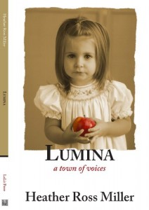

Heather Ross Miller, Lumina: A Town of Voices. Louisiana Literature Press, 84 pp. $14.95
{kind=link}
Although Heather Ross Miller is one of the most original of writers, her literary influences often seem to emanate from classical fairy tales, but in her most recent book of poetry, Lumina: A Town of Voices, she is closer to Edgar Lee Masters and Spoon River Anthology, set in the Midwest in the late nineteenth century. Like Masters, she connects individual poems and characters in a dramatic narrative of life in a small town, in her case the imagined Lumina, which bears some resemblance to Miller’s own childhood home of Badin, North Carolina, where an intimate community developed around an aluminum-smelting industry. It’s easier to follow Miller’s twenty-two characters than Masters’ 244, but like readers of Spoon River who today blog about their favorites, Miller’s readers will come to know Nell Leopard, Toby, Ariadne Burns, Leo Gabriel, Mrs. Bonnie Mae Boulware, and others upon whom the tragedies of love and loss resound like the falling water of the pent-up Yadkin River, until a whole “history, an obituary,” is told, “whose colors never fade.”
The poem begins in the voice of Nell to “recall, rehearse, set forth,” and as in most of Heather Ross Miller’s poems and fictions, the truth Miller tells is not for the weak of heart because she allows history to unfold in all of its “dangerous particulars.”
And yet, moving into and past broken marriages, adultery, drowned children, and stunted lives, we come into neighborhoods where shopkeepers sell notions; boys and girls meet to watch movies at the Alameda; Miss Parthenia sews silk for the Palmer girls; Mediterranean immigrants strive to keep alive memories of their old countries while they drink at the Olympia Café; and Miss Bonnie Mae Boulware (“sweet-spoken, with a fine/ firm-footed grace”) keeps house for her white employer and home for her husband Amos, “in this pure black life/of plain and unsweetened/ absurdity.”
By the end of the poem, life, hard as it has been, softens, and a young mother wants her son to learn “how to keep/ holding, holding on to love.” The final poem, “Sunrise Service,” brings it all home: “seeking care and comfort and company/from one small place, into your kingdom,/ Lord, just as we are,/ we come.”
Heather Ross Miller is neither a sentimentalist nor a professed believer in traditional Christianity, but there is something overwhelmingly affirming about these unforgettable stories of what happens to people when the hardest kind of work (aluminum-smelting) cannot quite defeat the human spirit.
Louisiana Literature Press has published Lumina in a handsome paperback edition with French endpapers and a stunning cover, a book to hold in your hands and be grateful.
Emily Herring Wilson lives in Winston-Salem, North Carolina, and is the author of women’s biographies and letters.